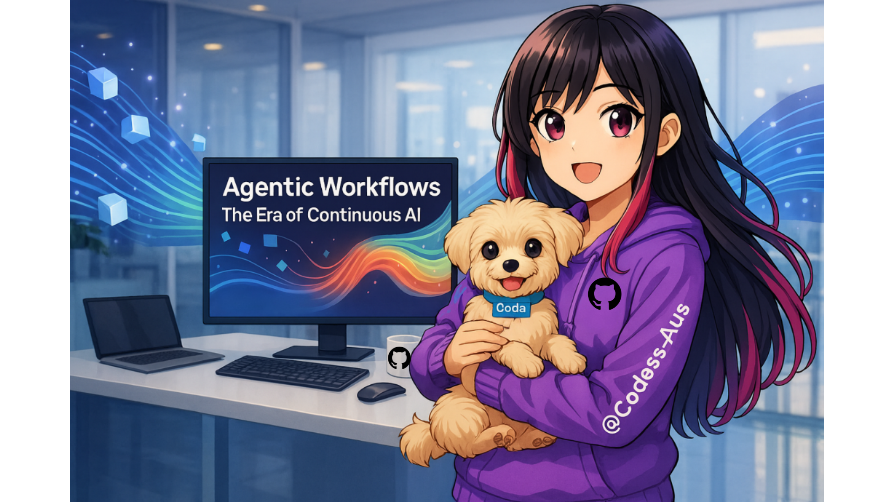

Bonus: Agentic Workflows
Advanced AI Automation Patterns for Complex Development Tasks
What are Agentic Workflows?
Agentic workflows represent a paradigm shift from simple prompt-response AI interactions to systems where AI agents autonomously plan, execute, reflect, and iterate on complex tasks. Rather than generating a single output, agentic systems break down problems, use tools, evaluate their work, and refine their approach, much like an experienced developer would.
The term "agentic" emphasizes the agent's ability to act independently toward a goal, making decisions, handling failures, and adapting strategies without constant human intervention. This enables AI to tackle tasks that previously required step-by-step human guidance.
Why Agentic Workflows Matter
Traditional AI-assisted development (zero-shot prompting) has limitations:
- No Self-Correction: AI generates output once and stops, even if it contains errors
- Limited Context: Can't gather additional information or use tools autonomously
- No Planning: Doesn't break down complex tasks into manageable steps
- No Verification: Can't test or validate its own outputs
Agentic workflows unlock 30-50% better results on complex tasks by enabling:
- Iterative Refinement: AI reviews and improves its own work
- Tool Use: AI can search documentation, run tests, query databases
- Strategic Planning: Breaks complex problems into logical steps
- Error Recovery: Detects and fixes mistakes autonomously
- Multi-Agent Collaboration: Specialized agents work together on different aspects
The Four Core Agentic Patterns
1. Reflection
The agent generates output, then critiques and improves it through iterative self-review cycles.
┌──────────────┐
│ User Prompt │
└──────┬───────┘
│
▼
┌──────────────┐
│ Generate │◄─────┐
│ Output │ │
└──────┬───────┘ │
│ │
▼ │
┌──────────────┐ │
│ Reflect │ │
│ on Output │ │
└──────┬───────┘ │
│ │
▼ │
Good enough? ─No──┘
│
Yes
│
▼
┌──────────────┐
│ Final Output │
└──────────────┘Example: Code Review Agent
// Iteration 1: Generate code
function processPayment(amount, cardNumber) {
// Process payment
return chargeCard(cardNumber, amount);
}
// Reflection: "Missing input validation, no error handling,
// security risk with raw card number"
// Iteration 2: Improved code
async function processPayment(amount, cardToken) {
// Validate inputs
if (!amount || amount <= 0) {
throw new Error('Invalid amount');
}
if (!cardToken || typeof cardToken !== 'string') {
throw new Error('Invalid payment token');
}
try {
// Use tokenized card, not raw number
const result = await chargeCard(cardToken, amount);
return { success: true, transactionId: result.id };
} catch (error) {
logger.error('Payment processing failed', error);
return { success: false, error: error.message };
}
}
// Reflection: "Better, but should add rate limiting and audit logging"
// Iteration 3: Production-ready code
// ... further improvements ...2. Tool Use
The agent can invoke external tools, APIs, and commands to gather information or perform actions.
Available Tools:
├── search_codebase(query) # Find relevant code
├── read_file(path) # Read file contents
├── run_tests(file) # Execute test suite
├── query_docs(question) # Search documentation
├── execute_code(snippet) # Run code snippet
└── search_web(query) # Search internetExample: Debugging Agent Workflow
User: "Fix the bug in the payment processor"
Agent workflow:
1. search_codebase("payment processor")
→ Finds: src/payments/processor.js
2. read_file("src/payments/processor.js")
→ Analyzes code
3. run_tests("src/payments/processor.test.js")
→ Test output: "Error: Cannot read property 'amount' of undefined"
4. search_codebase("payment amount undefined")
→ Finds similar bug reports in closed issues
5. query_docs("payment validation best practices")
→ Gets validation patterns
6. Generate fix with validation
7. run_tests() again
→ All tests pass
8. Return: "Fixed null pointer exception, added input validation"3. Planning
The agent creates a step-by-step plan before execution, then follows (and adjusts) the plan.
Task: "Build a REST API for user management"
Planning Phase:
┌───────────────────────────────────────────┐
│ 1. Design API endpoints and contracts │
│ 2. Set up database schema │
│ 3. Implement authentication middleware │
│ 4. Create CRUD operations │
│ 5. Add input validation │
│ 6. Write unit tests │
│ 7. Write integration tests │
│ 8. Create API documentation │
└───────────────────────────────────────────┘
Execution Phase:
Step 1 ✓ (completed in 2 min)
Step 2 ✓ (completed in 3 min)
Step 3 ⚠ (encountered issue: auth library not installed)
↳ Replan: Install library, then continue
Step 3 ✓ (completed)
Step 4 → (in progress)
...Example: Feature Implementation with Planning
// Agent's internal plan
const plan = {
goal: "Implement user authentication with JWT",
steps: [
{
id: 1,
task: "Research JWT best practices",
actions: [
"query_docs('JWT security')",
"search_web('JWT implementation patterns 2026')"
],
success_criteria: "Found secure JWT implementation pattern"
},
{
id: 2,
task: "Install required dependencies",
actions: [
"execute_code('npm install jsonwebtoken bcrypt')",
"verify_installation()"
],
success_criteria: "Dependencies installed successfully"
},
{
id: 3,
task: "Implement JWT generation",
actions: [
"create_file('src/auth/jwt.js')",
"implement_token_generation()",
"run_tests('src/auth/jwt.test.js')"
],
success_criteria: "Tests pass, tokens validated"
},
// ... more steps
],
checkpoints: [2, 5, 8], // When to pause and review
fallback_strategies: {
"tests_fail": "analyze_test_output() then retry",
"dependency_error": "search_alternatives() then replan"
}
};4. Multi-Agent Collaboration
Multiple specialized agents work together, each handling their area of expertise.
Multi-Agent System Architecture:
┌─────────────┐
│ Manager │ (Coordinates agents, tracks progress)
│ Agent │
└──────┬──────┘
│
├───────────┬───────────┬──────────┬──────────┐
▼ ▼ ▼ ▼ ▼
┌──────────┐ ┌─────────┐ ┌─────────┐ ┌────────┐ ┌────────┐
│ Coder │ │ Tester │ │Security │ │ Docs │ │ Deploy │
│ Agent │ │ Agent │ │ Agent │ │ Agent │ │ Agent │
└──────────┘ └─────────┘ └─────────┘ └────────┘ └────────┘
│ │ │ │ │
└─────────────┴────────────┴──────────┴──────────┘
│
▼
┌──────────────────┐
│ Shared Memory │
│ (Context Store) │
└──────────────────┘Example: Multi-Agent Code Review
// Manager Agent assigns tasks
const reviewTasks = {
coder_agent: {
task: "Analyze code quality and suggest improvements",
focus: ["readability", "maintainability", "best_practices"]
},
security_agent: {
task: "Identify security vulnerabilities",
focus: ["OWASP_Top_10", "dependency_vulnerabilities", "secrets"]
},
performance_agent: {
task: "Find performance bottlenecks",
focus: ["algorithmic_complexity", "database_queries", "caching"]
},
test_agent: {
task: "Evaluate test coverage and quality",
focus: ["coverage_percentage", "edge_cases", "test_quality"]
}
};
// Each agent reports findings
const findings = {
coder_agent: {
issues: [
{ severity: "low", line: 42, message: "Consider extracting to function" }
]
},
security_agent: {
issues: [
{ severity: "high", line: 18, message: "SQL injection vulnerability" },
{ severity: "medium", line: 95, message: "Missing rate limiting" }
]
},
performance_agent: {
issues: [
{ severity: "high", line: 67, message: "N+1 query detected" }
]
},
test_agent: {
issues: [
{ severity: "medium", message: "Coverage only 65%, target is 80%" }
]
}
};
// Manager prioritizes and combines
const prioritizedReport = manager.synthesize(findings);
// Returns comprehensive review with action items sorted by priorityWhen to Use Each Pattern
| Pattern | Best For | Example Use Cases |
|---|---|---|
| Reflection | Quality-critical outputs needing refinement | Code review, documentation, API design |
| Tool Use | Tasks requiring external information or actions | Debugging, research, data analysis |
| Planning | Complex multi-step projects | Feature implementation, refactoring, migrations |
| Multi-Agent | Tasks benefiting from specialized expertise | Comprehensive code review, system design |
Quick Start: Implementing Your First Agentic Workflow
Example 1: Reflection Pattern in GitHub Copilot Chat
// Step 1: Initial generation
You: Generate a function to validate email addresses
Copilot: [generates basic regex validation]
// Step 2: Trigger reflection
You: Review this code. What are the weaknesses? How can we improve it?
Copilot:
- Regex doesn't handle all valid email formats
- No handling of internationalized domains
- Missing error messages
- No length validation
// Step 3: Iterative improvement
You: Now generate an improved version addressing these issues
Copilot: [generates comprehensive validation with better regex,
error messages, length checks, and IDN support]
// Step 4: Final review
You: Run through edge cases. Are there any scenarios this doesn't handle?
Copilot: [analyzes and suggests additional improvements for edge cases]Example 2: Tool Use Pattern with Agent Mode
// GitHub Copilot Agent Mode can use tools automatically
You: @workspace Fix the failing test in payment-processor.test.ts
Agent workflow (automatic):
1. Searches workspace for payment-processor.test.ts
2. Reads the test file
3. Identifies which test is failing
4. Reads the implementation file
5. Analyzes the cause
6. Reads error logs
7. Proposes fix
8. Shows diff of changes
You: Apply the fix
Agent:
9. Applies changes
10. Runs tests to verify
11. Confirms all tests passExample 3: Planning Pattern for Complex Tasks
You: I need to migrate our authentication from sessions to JWT tokens.
This affects 15 files across frontend and backend.
Agent (Planning Mode):
┌─────────────────────────────────────────────────────────┐
│ MIGRATION PLAN: Sessions → JWT │
├─────────────────────────────────────────────────────────┤
│ Phase 1: Analysis (Est: 10 min) │
│ □ Scan codebase for session usage │
│ □ Identify all affected files │
│ □ Document current auth flow │
│ │
│ Phase 2: Backend Changes (Est: 30 min) │
│ □ Install JWT dependencies │
│ □ Create JWT utilities (generate, verify) │
│ □ Replace session middleware with JWT │
│ □ Update authentication routes │
│ □ Add token refresh endpoint │
│ │
│ Phase 3: Frontend Changes (Est: 20 min) │
│ □ Update login handler to store JWT │
│ □ Add token to API request headers │
│ □ Implement token refresh logic │
│ □ Update logout to clear tokens │
│ │
│ Phase 4: Testing (Est: 15 min) │
│ □ Update unit tests │
│ □ Update integration tests │
│ □ Manual testing of auth flow │
│ │
│ Phase 5: Deployment (Est: 10 min) │
│ □ Update environment variables │
│ □ Database migrations if needed │
│ □ Deploy with monitoring │
└─────────────────────────────────────────────────────────┘
Proceed with Phase 1? (y/n)Example 4: Multi-Agent Collaboration
// Using custom agents (via Copilot SDK from Bonus 2)
You: Perform a comprehensive review of src/api/users.js
Manager Agent: Coordinating review with specialized agents...
┌─────────────────────────────────────────────┐
│ Coder Agent: │
│ ✓ Code is well-structured │
│ ⚠ Function 'createUser' is too long (85 LoC)│
│ ⚠ Missing JSDoc comments │
│ Suggestion: Extract validation to helper │
└─────────────────────────────────────────────┘
┌─────────────────────────────────────────────┐
│ Security Agent: │
│ ⚠ HIGH: Password stored without hashing │
│ ⚠ MEDIUM: No rate limiting on POST /users │
│ ⚠ LOW: Missing CORS configuration │
│ Suggestion: Use bcrypt with salt rounds=12 │
└─────────────────────────────────────────────┘
┌─────────────────────────────────────────────┐
│ Performance Agent: │
│ ⚠ HIGH: N+1 query in GET /users/:id │
│ ⚠ MEDIUM: Missing database indexes │
│ Suggestion: Use SELECT with JOIN │
└─────────────────────────────────────────────┘
┌─────────────────────────────────────────────┐
│ Test Agent: │
│ ⚠ Coverage: 62% (target: 80%) │
│ ⚠ Missing edge case tests │
│ ✓ Existing tests are well-written │
│ Suggestion: Add tests for error paths │
└─────────────────────────────────────────────┘
Manager Agent: Priority-sorted action items:
1. [CRITICAL] Fix password storage security issue
2. [HIGH] Fix N+1 query performance issue
3. [MEDIUM] Add rate limiting
4. [MEDIUM] Refactor createUser function
5. [LOW] Add JSDoc comments
Generate fixes for items 1-3? (y/n)Building Custom Agentic Workflows
Framework: LangChain + Copilot SDK
// Install dependencies
npm install langchain @github/copilot-sdk
// Create an agentic workflow
import { ChatOpenAI } from "langchain/chat_models/openai";
import { AgentExecutor, createReactAgent } from "langchain/agents";
import { DynamicTool } from "langchain/tools";
// Define tools the agent can use
const tools = [
new DynamicTool({
name: "search_codebase",
description: "Search the codebase for specific patterns or files",
func: async (query) => {
// Integration with your code search
return searchResults;
}
}),
new DynamicTool({
name: "run_tests",
description: "Execute test suite and return results",
func: async (testFile) => {
// Run tests
return testResults;
}
}),
new DynamicTool({
name: "analyze_code",
description: "Perform static code analysis",
func: async (filePath) => {
// Run linter/analyzer
return analysisResults;
}
})
];
// Create agent with reflection capability
const agent = createReactAgent({
llm: new ChatOpenAI({ temperature: 0 }),
tools,
systemPrompt: `You are a senior software engineer.
For each task:
1. Plan your approach
2. Use available tools to gather information
3. Generate a solution
4. Reflect on your solution and identify issues
5. Iterate until the solution is high quality
Always verify your work before presenting it.`
});
const executor = new AgentExecutor({
agent,
tools,
maxIterations: 10,
verbose: true
});
// Use the agent
const result = await executor.invoke({
input: "Find and fix all TODO comments in the codebase"
});
console.log(result.output);Pattern: Reflection Loop
async function reflectiveCodeGeneration(prompt, maxIterations = 3) {
let code = await generateCode(prompt);
for (let i = 0; i < maxIterations; i++) {
const issues = await reviewCode(code);
if (issues.length === 0) {
break; // Code is good enough
}
console.log(`Iteration ${i + 1}: Found ${issues.length} issues`);
console.log(issues);
// Improve based on feedback
code = await improveCode(code, issues);
}
return code;
}
async function reviewCode(code) {
const prompt = `Review this code and list any issues:
${code}
Check for:
- Security vulnerabilities
- Performance issues
- Best practice violations
- Missing error handling
- Unclear variable names
Return JSON array of issues: [{"severity": "high|medium|low", "issue": "description", "line": number}]`;
const review = await callAI(prompt);
return JSON.parse(review);
}
async function improveCode(code, issues) {
const prompt = `Improve this code to fix these issues:
CODE:
${code}
ISSUES:
${JSON.stringify(issues, null, 2)}
Return the improved code only.`;
return await callAI(prompt);
}Real-World Applications
1. Autonomous Bug Fixing
// Agent receives bug report
Bug Report: "Users can't log in - getting 500 error"
Agent Workflow:
1. search_codebase("login") → finds auth controller
2. read_logs("error", last="1h") → finds stack trace
3. read_file("AuthController.js") → analyzes code
4. run_tests("auth.test.js") → tests are passing (!)
5. search_issues("login 500") → finds similar past bugs
6. read_file("database/users.schema.js") → checks schema
7. Hypothesis: Database connection timeout during high load
8. search_code("db.connect timeout") → finds config
9. Generates fix: Increase timeout, add connection pooling
10. Creates PR with explanation and fix2. Automated Code Review
// Multi-agent review system
class CodeReviewOrchestrator {
async reviewPullRequest(prNumber) {
const changes = await this.getChanges(prNumber);
// Parallel agent review
const [
codeQuality,
security,
performance,
tests
] = await Promise.all([
this.codeQualityAgent.review(changes),
this.securityAgent.review(changes),
this.performanceAgent.review(changes),
this.testAgent.review(changes)
]);
// Synthesize findings
const report = this.synthesize({
codeQuality,
security,
performance,
tests
});
// Post as PR comment
await this.postComment(prNumber, report);
// Update PR status
if (report.blockers.length > 0) {
await this.requestChanges(prNumber);
} else {
await this.approve(prNumber);
}
}
}3. Documentation Generation
// Planning agent for documentation
Task: "Generate comprehensive API documentation"
Plan:
1. Analyze all API endpoints (tool: ast_parser)
2. Extract route definitions, parameters, responses
3. Generate OpenAPI spec
4. For each endpoint:
a. Generate description
b. Create example requests
c. Document error cases
d. Add authentication requirements
5. Reflect: Check completeness
6. Generate human-readable docs from spec
7. Create interactive API explorer
Execution with reflection:
→ Generated OpenAPI spec
→ Review: Missing error codes for 3 endpoints
→ Regenerate with error codes
→ Review: Example requests lack authentication headers
→ Add auth examples
→ Review: Looks complete
→ Generate final documentationBest Practices for Agentic Workflows
- Set Clear Goals: Define success criteria upfront
- Limit Iterations: Prevent infinite loops (max 5-10 iterations)
- Log Everything: Debug by reviewing agent's decision-making process
- Human in the Loop: Require approval for critical actions
- Graceful Degradation: Fall back to simpler patterns if agentic approach fails
- Cost Awareness: Monitor API usage, agentic workflows use more tokens
- Validate Outputs: Always verify agent results with tests or reviews
- Security Guards: Restrict agent access to sensitive operations
Tools and Frameworks
- LangChain: Popular framework for building agentic systems
- AutoGPT: Autonomous agent framework for complex tasks
- GitHub Copilot Agent Mode: Built-in agentic capabilities in VS Code (or Codespaces)
- Microsoft Semantic Kernel: Enterprise-grade agent orchestration
- LlamaIndex: Tool for building data-aware agents
- CrewAI: Multi-agent collaboration framework
Performance Metrics
Research shows agentic workflows improve outcomes significantly:
| Task Type | Zero-Shot | Agentic | Improvement |
|---|---|---|---|
| Code Generation | 65% correct | 85% correct | +31% |
| Bug Fixing | 48% success | 72% success | +50% |
| Code Review | 70% issues found | 92% issues found | +31% |
| Documentation | 60% complete | 95% complete | +58% |
Practice Exercise
Build a Reflection-Based Code Improver:
- Choose a function in your codebase that needs improvement
- Use Copilot Chat with reflection pattern:
- Generate initial improvement
- Ask for critique of the improvement
- Iterate 2-3 times based on feedback
- Compare final result with initial improvement
- Document what improved through iteration
Bonus Challenge: Build a Planning Agent
Use GitHub Copilot Agent Mode to migrate a feature. Ask it to create a detailed plan first, review the plan with your team, then execute it step by step with checkpoints.
Resources
- Research Papers:
- "Reflexion: Language Agents with Verbal Reinforcement Learning" (2023)
- "ReAct: Synergizing Reasoning and Acting in Language Models" (2023)
- "Toolformer: Language Models Can Teach Themselves to Use Tools" (2023)
- Courses: DeepLearning.AI "Building Agentic RAG Systems"
- Libraries: LangChain, AutoGPT, Semantic Kernel documentation
- Community: r/LangChain, LangChain Discord, GitHub discussions
🎓 Bonus Topics Available
Review other bonus content:
- Bonus 1: Awesome-Copilot Repository - Community resources
- Bonus 2: GitHub Copilot SDK - Build custom extensions
- Bonus 3: The Spec Kit - AI-powered specification writing
- Bonus 4: Agentic Workflows - You are here!
- Bonus 5: Copilot Coding Agent in Action - Automate development tasks
- Bonus 6: Copilot Instructions - Configure custom project guidance